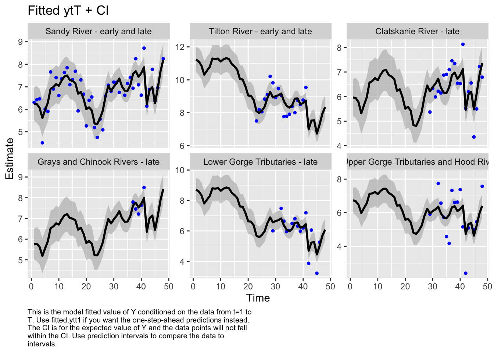
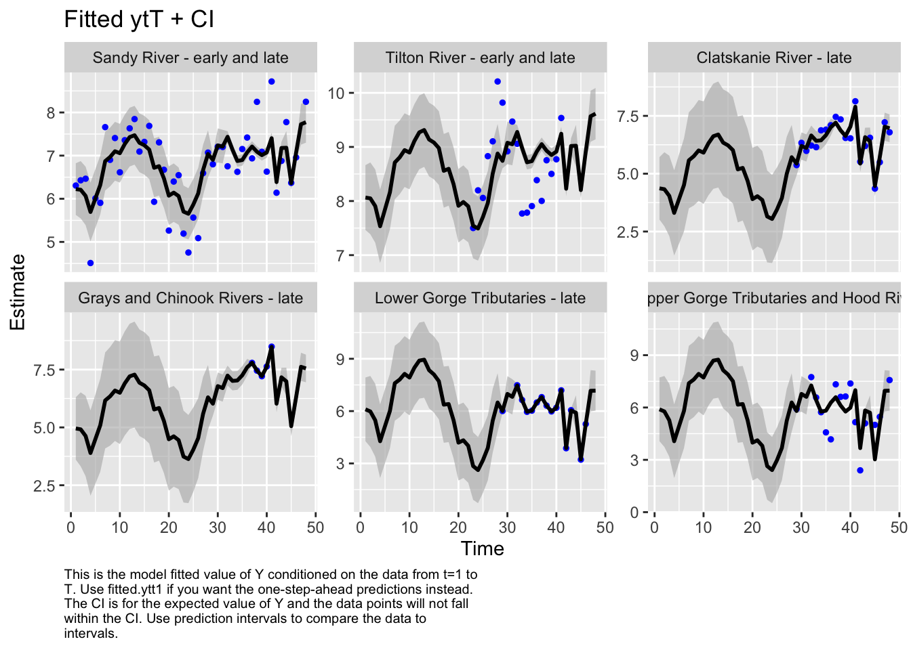
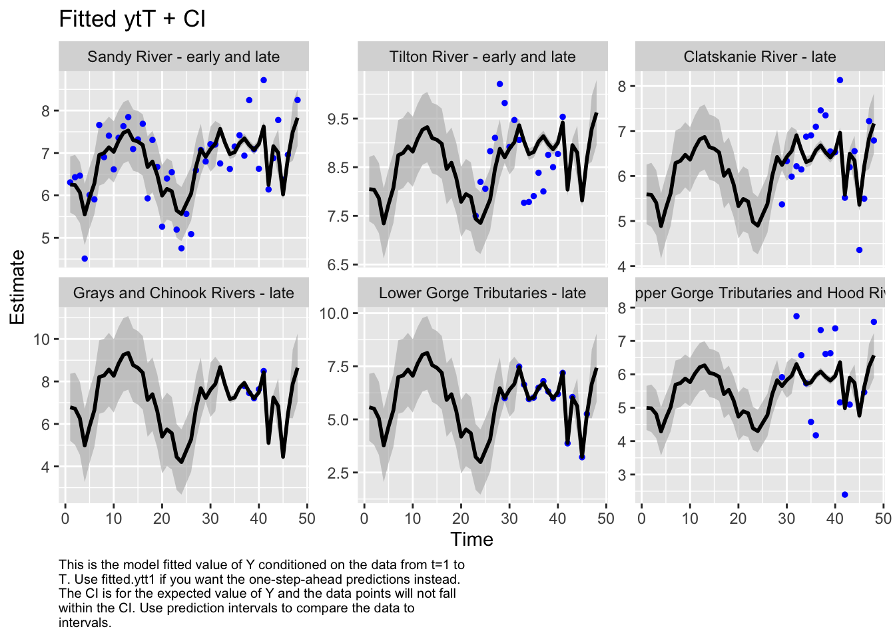
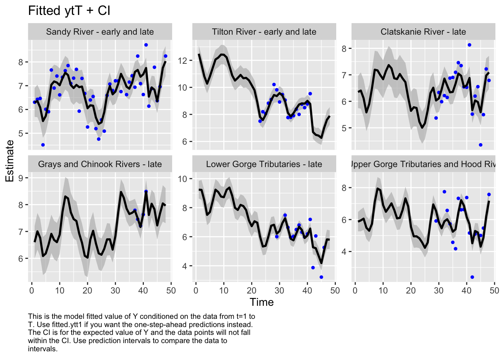
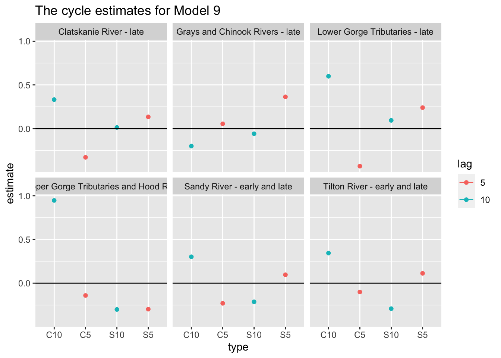
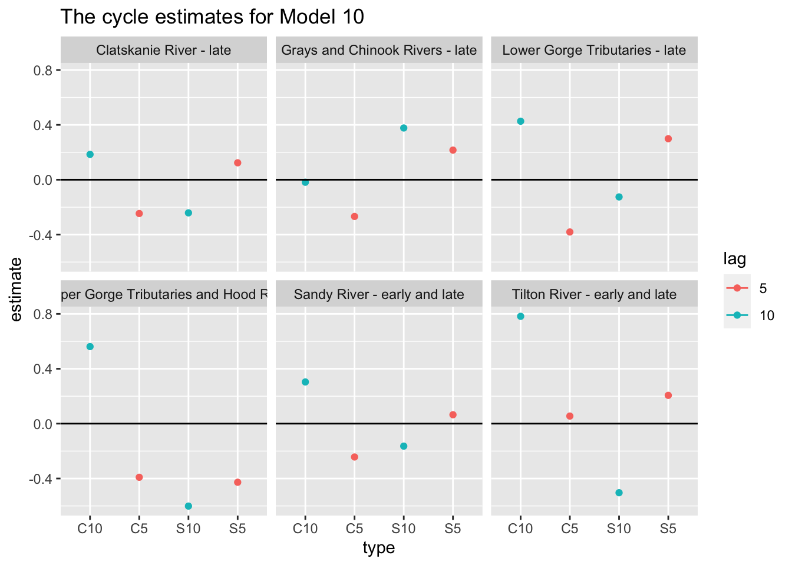
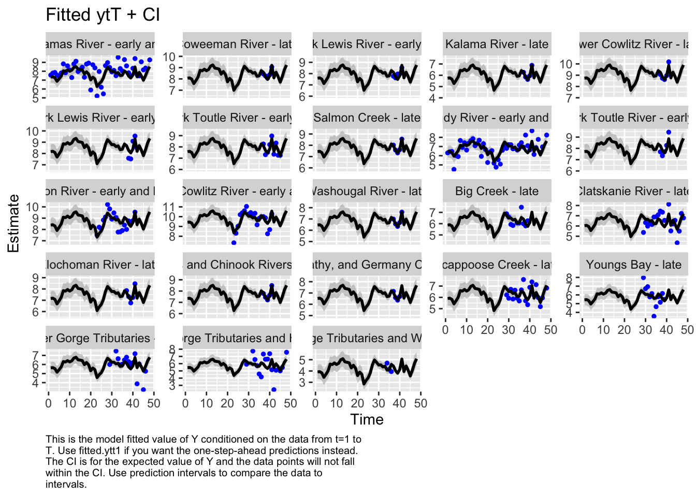

We were assigned the Lower Columbia Coho data set. We selected two rivers from each Major Population Group (MPG) to test the performance of several models. The selected populations are:
Cascade MPG - Tilton and Sandy Rivers
Gorge MPG Upper and Lower Gorge Tributaries
Coast MPG Clatskanie, and Grays/Chinook Rivers
Code
library(tidyverse)
── Attaching core tidyverse packages ──────────────────────── tidyverse 2.0.0 ──
✔ dplyr 1.1.2 ✔ readr 2.1.4
✔ forcats 1.0.0 ✔ stringr 1.5.0
✔ ggplot2 3.4.2 ✔ tibble 3.2.1
✔ lubridate 1.9.2 ✔ tidyr 1.3.0
✔ purrr 1.0.1
── Conflicts ────────────────────────────────────────── tidyverse_conflicts() ──
✖ dplyr::filter() masks stats::filter()
✖ dplyr::lag() masks stats::lag()
ℹ Use the conflicted package (<http://conflicted.r-lib.org/>) to force all conflicts to become errors
Code
library(MARSS)library(broom)# Load the dataload(here::here("Lab-2", "Data_Images", "columbia-river.rda"))
#format for visualizationlibrary(dplyr)esuname <- esu[4]dat <- columbia.river %>%subset(esu_dps == esuname) %>%# get only this ESUmutate(log.spawner =log(value)) %>%# create a column called log.spawnerselect(esapopname, spawningyear, log.spawner) %>%# get just the columns that I needpivot_wider(names_from ="esapopname", values_from ="log.spawner") %>%column_to_rownames(var ="spawningyear") %>%# make the years rownamesas.matrix() %>%# turn into a matrix with year down the rowst() # make time across the columns# MARSS complains if I don't do thisdat[is.na(dat)] <-NA
Clean up the row names
Code
tmp <-rownames(dat)tmp <- stringr::str_replace(tmp, "Salmon, coho [(]Lower Columbia River ESU[)]", "")tmp <- stringr::str_trim(tmp)rownames(dat) <- tmp
Select a subset of rivers to test
Code
mod_rivers <-c("Sandy River - early and late", "Grays and Chinook Rivers - late", "Clatskanie River - late", "Lower Gorge Tributaries - late", "Tilton River - early and late" , "Oregon Upper Gorge Tributaries and Hood River - early")sub_dat <- dat[rownames(dat) %in% mod_rivers, ]
Methods
We tested many models and a variety of assumptions, many of which varied by model. For all models we assumed that A was a scaling parameter.
Below we made a variety of assumptions and used them to generate five models to test which set of assumptions would produce the best fit to the data.
Code
# Model 1: all regions are behaving independently (x) but observations were collected similarly## each region has it's own drift where U = unequal ## variance is diagonal and equal due to similar methods for collecting observations## we leave Q unconstrained here, this gives the most flexibility for each population to be unique, but may not be the best approach as we assume they should be at least somewhat related due to geographic proximitymod.list1 <-list(U ="unequal",R ="diagonal and equal",Q ="unconstrained")# Model 2: all regions are reflecting 1 underlying state (x) with equal variance## 1 underlying state where U = equal## R is diagonal and equal due to similar methods for collecting observations## Q is again unconstrained but the U is equal so slighty less variation between populations than model 1mod.list2 <-list(U ="equal",R ="diagonal and equal",Q ="unconstrained")# Model 3: flexible model with unequal observation variance and a matrix for drift and state variance and one underlying state## set scaling on B as 1## U is matrix of estimated values## variance Q is constrained so that all populations vary together## variance R is diagonal and unequal to account for potential differences in observation error, ie different methods between regions## A intercept can change as needed ## Z matrix is based on our 6 selected populations and each is treated as differentmod.list3 <-list(B =matrix(1), U =matrix("u"), Q =matrix("q"), # 1 XZ =matrix(1, 6, 1), A ="scaling", R ="diagonal and unequal", # single column of 1s for Yx0 =matrix("mu"), tinitx =0)# Model 4: flexible model for independent regions## B and Z scale to size of matrix, all 1's## U = bias = independent matrix set to size of dataframe## Q eaual variance in state with equal covariances## R variance is diagonal and equal due to similar methods for collecting observationsmod.list4 <-list(B =diag(1,6), U =matrix("u",6,1), Q ="diagonal and unequal", Z =diag(1,6), A ="scaling", R ="diagonal and equal", x0 ="unequal", tinitx =0)# Model 5: keep it simple. Each region has an independent state, observation variance is the same, and one process variance with one covariance. mod.list5 <-list(U ="unequal",R ="diagonal and equal",Q ="equalvarcov")
Success! Converged in 238 iterations.
Function MARSSkfas used for likelihood calculation.
MARSS fit is
Estimation method: BFGS
Estimation converged in 238 iterations.
Log-likelihood: -132.2021
AIC: 332.4043 AICc: 360.0787
Estimate
R.diag 0.01438
U.X.Sandy River - early and late 0.04086
U.X.Tilton River - early and late 0.13791
U.X.Clatskanie River - late 0.00863
U.X.Grays and Chinook Rivers - late 0.10476
U.X.Lower Gorge Tributaries - late -0.00326
U.X.Oregon Upper Gorge Tributaries and Hood River - early 0.07033
Q.(1,1) 0.96632
Q.(2,1) 0.23773
Q.(3,1) 0.86258
Q.(4,1) 0.61088
Q.(5,1) 0.92889
Q.(6,1) 0.23482
Q.(2,2) 0.32067
Q.(3,2) 0.01290
Q.(4,2) 0.01512
Q.(5,2) 0.09117
Q.(6,2) 0.01120
Q.(3,3) 0.99958
Q.(4,3) 0.81170
Q.(5,3) 1.18893
Q.(6,3) 0.49625
Q.(4,4) 0.79880
Q.(5,4) 1.19349
Q.(6,4) 0.70243
Q.(5,5) 1.81854
Q.(6,5) 1.23660
Q.(6,6) 2.31940
x0.X.Sandy River - early and late 6.26627
x0.X.Tilton River - early and late 4.87102
x0.X.Clatskanie River - late 6.37770
x0.X.Grays and Chinook Rivers - late 3.79437
x0.X.Lower Gorge Tributaries - late 7.22292
x0.X.Oregon Upper Gorge Tributaries and Hood River - early 4.15493
Initial states (x0) defined at t=0
Standard errors have not been calculated.
Use MARSSparamCIs to compute CIs and bias estimates.
Success! Converged in 228 iterations.
Function MARSSkfas used for likelihood calculation.
MARSS fit is
Estimation method: BFGS
Estimation converged in 228 iterations.
Log-likelihood: -132.6153
AIC: 323.2306 AICc: 342.3515
Estimate
R.diag 0.014405
U.1 0.113374
Q.(1,1) 0.971613
Q.(2,1) 0.226563
Q.(3,1) 0.866885
Q.(4,1) 0.595561
Q.(5,1) 0.935713
Q.(6,1) 0.244217
Q.(2,2) 0.317706
Q.(3,2) 0.000202
Q.(4,2) 0.077537
Q.(5,2) 0.071455
Q.(6,2) -0.014512
Q.(3,3) 1.004670
Q.(4,3) 0.747402
Q.(5,3) 1.197406
Q.(6,3) 0.499534
Q.(4,4) 0.750104
Q.(5,4) 1.156733
Q.(6,4) 0.663932
Q.(5,5) 1.831847
Q.(6,5) 1.249664
Q.(6,6) 2.315909
x0.X.Sandy River - early and late 6.192479
x0.X.Tilton River - early and late 5.770486
x0.X.Clatskanie River - late 5.362233
x0.X.Grays and Chinook Rivers - late 5.952552
x0.X.Lower Gorge Tributaries - late 5.970913
x0.X.Oregon Upper Gorge Tributaries and Hood River - early 3.605473
Initial states (x0) defined at t=0
Standard errors have not been calculated.
Use MARSSparamCIs to compute CIs and bias estimates.
Code
fit3 <-MARSS(sub_dat, model=mod.list3)
Success! abstol and log-log tests passed at 75 iterations.
Alert: conv.test.slope.tol is 0.5.
Test with smaller values (<0.1) to ensure convergence.
MARSS fit is
Estimation method: kem
Convergence test: conv.test.slope.tol = 0.5, abstol = 0.001
Estimation converged in 75 iterations.
Log-likelihood: -152.7093
AIC: 333.4185 AICc: 337.3808
Estimate
A.Tilton River - early and late 1.8010
A.Clatskanie River - late -0.6439
A.Grays and Chinook Rivers - late 0.2379
A.Lower Gorge Tributaries - late -1.0716
A.Oregon Upper Gorge Tributaries and Hood River - early -1.2511
R.(Sandy River - early and late,Sandy River - early and late) 0.2843
R.(Tilton River - early and late,Tilton River - early and late) 0.7014
R.(Clatskanie River - late,Clatskanie River - late) 0.2951
R.(Grays and Chinook Rivers - late,Grays and Chinook Rivers - late) 0.0384
R.(Lower Gorge Tributaries - late,Lower Gorge Tributaries - late) 0.5659
R.(Oregon Upper Gorge Tributaries and Hood River - early,Oregon Upper Gorge Tributaries and Hood River - early) 1.5916
U.u 0.0326
Q.q 0.3637
x0.mu 6.2476
Initial states (x0) defined at t=0
Standard errors have not been calculated.
Use MARSSparamCIs to compute CIs and bias estimates.
Code
fit4 <-MARSS(sub_dat, model=mod.list4)
Warning! Abstol convergence only. Maxit (=500) reached before log-log convergence.
MARSS fit is
Estimation method: kem
Convergence test: conv.test.slope.tol = 0.5, abstol = 0.001
WARNING: Abstol convergence only no log-log convergence.
maxit (=500) reached before log-log convergence.
The likelihood and params might not be at the ML values.
Try setting control$maxit higher.
Log-likelihood: -166.2868
AIC: 360.5736 AICc: 364.5358
Estimate
R.diag 0.453112
U.u 0.055434
Q.(X.Sandy River - early and late,X.Sandy River - early and late) 0.092472
Q.(X.Tilton River - early and late,X.Tilton River - early and late) 0.105175
Q.(X.Clatskanie River - late,X.Clatskanie River - late) 0.081650
Q.(X.Grays and Chinook Rivers - late,X.Grays and Chinook Rivers - late) 0.000648
Q.(X.Lower Gorge Tributaries - late,X.Lower Gorge Tributaries - late) 0.231055
Q.(X.Oregon Upper Gorge Tributaries and Hood River - early,X.Oregon Upper Gorge Tributaries and Hood River - early) 1.369032
x0.X.Sandy River - early and late 6.069829
x0.X.Tilton River - early and late 6.777505
x0.X.Clatskanie River - late 4.281262
x0.X.Grays and Chinook Rivers - late 5.479334
x0.X.Lower Gorge Tributaries - late 4.620066
x0.X.Oregon Upper Gorge Tributaries and Hood River - early 4.422688
Initial states (x0) defined at t=0
Standard errors have not been calculated.
Use MARSSparamCIs to compute CIs and bias estimates.
Convergence warnings
Warning: the Q.(X.Grays and Chinook Rivers - late,X.Grays and Chinook Rivers - late) parameter value has not converged.
Type MARSSinfo("convergence") for more info on this warning.
Code
fit5 <-MARSS(sub_dat, model=mod.list5, control =list(maxit=1000))
Success! abstol and log-log tests passed at 893 iterations.
Alert: conv.test.slope.tol is 0.5.
Test with smaller values (<0.1) to ensure convergence.
MARSS fit is
Estimation method: kem
Convergence test: conv.test.slope.tol = 0.5, abstol = 0.001
Estimation converged in 893 iterations.
Log-likelihood: -153.8425
AIC: 337.6851 AICc: 342.2565
Estimate
R.diag 0.46807
U.X.Sandy River - early and late 0.04176
U.X.Tilton River - early and late -0.06150
U.X.Clatskanie River - late 0.02970
U.X.Grays and Chinook Rivers - late 0.05641
U.X.Lower Gorge Tributaries - late -0.05582
U.X.Oregon Upper Gorge Tributaries and Hood River - early -0.00703
Q.diag 0.33587
Q.offdiag 0.33577
x0.X.Sandy River - early and late 6.19170
x0.X.Tilton River - early and late 11.29497
x0.X.Clatskanie River - late 5.93388
x0.X.Grays and Chinook Rivers - late 5.70333
x0.X.Lower Gorge Tributaries - late 8.76133
x0.X.Oregon Upper Gorge Tributaries and Hood River - early 6.74708
Initial states (x0) defined at t=0
Standard errors have not been calculated.
Use MARSSparamCIs to compute CIs and bias estimates.
Here we plot the fit of the models to visually check the model performance
MARSSresiduals.tT reported warnings. See msg element or attribute of returned residuals object.
plot.type = fitted.ytT

Finished plots.
Here we further tested the model fit by examining the corrplot to see which rivers were most closely correlated to see if that fit with our assumptions.
Code
# change fit# to evaluate correlation between regions in different models library(corrplot)
Correlation matrix of 6 test regions shows high correlation between Tilton River and Grays and Chinook Rivers, indicating the potential of these regions behaving as 1 sub-population. This will be tested in the next section.
A comparison of delta AICc indicates that model 3 is the best fit for the data. There are no other models within delta AICc of 2.0 or less. There are two alternative models within delta AICc of 5.0, but no compelling reason to further those over the clearly top model. Model 3 was the best out of the five models tested, so we’ll use that one to estimate historical abundances. This is not to say that model 3 is the best model possible for this data, only that it’s the best model out of the 5 that we compared.
We then evaluated the fit of states by looking at plots and residuals
We also examined the potential for region to behave as sub-populations based on major population group, our initial correlation analysis, and some geographic assumptions about physical proximity and climate.
Comparing 3 sub-populations: cascade, coast, and gorge based on their designated MPG
Code
mod.list6 <-list(#B = matrix(1), # B = "identity" 3x3 matrix# U = matrix("u"), #needs 3 rows U = "equal" or "unequal" # default = unequalQ ="unconstrained", # 1 XZ =factor(c("cascade", "cascade", "coast", "coast", "gorge", "gorge")), A ="scaling", R ="diagonal and unequal", # single column of 1s for Y#x0 = matrix("mu"), # x0 = default tinitx =0)fit6 <-MARSS(sub_dat, model = mod.list6)
Warning! Abstol convergence only. Maxit (=500) reached before log-log convergence.
MARSS fit is
Estimation method: kem
Convergence test: conv.test.slope.tol = 0.5, abstol = 0.001
WARNING: Abstol convergence only no log-log convergence.
maxit (=500) reached before log-log convergence.
The likelihood and params might not be at the ML values.
Try setting control$maxit higher.
Log-likelihood: -142.2401
AIC: 326.4802 AICc: 335.8136
Estimate
A.Tilton River - early and late 1.84062
A.Grays and Chinook Rivers - late 0.58750
A.Oregon Upper Gorge Tributaries and Hood River - early -0.20634
R.(Sandy River - early and late,Sandy River - early and late) 0.33917
R.(Tilton River - early and late,Tilton River - early and late) 0.53829
R.(Clatskanie River - late,Clatskanie River - late) 0.11986
R.(Grays and Chinook Rivers - late,Grays and Chinook Rivers - late) 0.00168
R.(Lower Gorge Tributaries - late,Lower Gorge Tributaries - late) 0.00386
R.(Oregon Upper Gorge Tributaries and Hood River - early,Oregon Upper Gorge Tributaries and Hood River - early) 1.25596
U.cascade 0.03298
U.coast 0.05520
U.gorge 0.02279
Q.(1,1) 0.19674
Q.(2,1) 0.38386
Q.(3,1) 0.59328
Q.(2,2) 0.87190
Q.(3,2) 1.20480
Q.(3,3) 1.80778
x0.cascade 6.19074
x0.coast 4.31126
x0.gorge 6.07799
Initial states (x0) defined at t=0
Standard errors have not been calculated.
Use MARSSparamCIs to compute CIs and bias estimates.
Convergence warnings
Warning: the R.(Grays and Chinook Rivers - late,Grays and Chinook Rivers - late) parameter value has not converged.
Warning: the R.(Lower Gorge Tributaries - late,Lower Gorge Tributaries - late) parameter value has not converged.
Type MARSSinfo("convergence") for more info on this warning.
Code
autoplot(fit6, plot.type="fitted.ytT")

plot.type = fitted.ytT
Finished plots.
Based on the correlation plot, the grays and chinook rivers and the lower gorge tributaries are highly correlated. We want to evaluate a model with these regions as a sub-population.
Comparing 2 sub-populations: grays/chinook rivers and lower gorge “GCL” and all other test regions “STCU”
Code
mod.list7 <-list(Q ="unconstrained", # 1 XZ =factor(c("STCU", "STCU", "STCU", "GCL", "GCL", "STCU")), A ="scaling", R ="diagonal and unequal", # single column of 1s for Ytinitx =0)fit7 <-MARSS(sub_dat, model = mod.list7)
Success! abstol and log-log tests passed at 452 iterations.
Alert: conv.test.slope.tol is 0.5.
Test with smaller values (<0.1) to ensure convergence.
MARSS fit is
Estimation method: kem
Convergence test: conv.test.slope.tol = 0.5, abstol = 0.001
Estimation converged in 452 iterations.
Log-likelihood: -144.5939
AIC: 323.1877 AICc: 329.1295
Estimate
A.Tilton River - early and late 1.79368
A.Clatskanie River - late -0.66291
A.Lower Gorge Tributaries - late -1.21399
A.Oregon Upper Gorge Tributaries and Hood River - early -1.26072
R.(Sandy River - early and late,Sandy River - early and late) 0.32024
R.(Tilton River - early and late,Tilton River - early and late) 0.61981
R.(Clatskanie River - late,Clatskanie River - late) 0.38990
R.(Grays and Chinook Rivers - late,Grays and Chinook Rivers - late) 0.01470
R.(Lower Gorge Tributaries - late,Lower Gorge Tributaries - late) 0.00834
R.(Oregon Upper Gorge Tributaries and Hood River - early,Oregon Upper Gorge Tributaries and Hood River - early) 1.36820
U.STCU 0.03351
U.GCL 0.03955
Q.(1,1) 0.28112
Q.(2,1) 0.67064
Q.(2,2) 1.60038
x0.STCU 6.22159
x0.GCL 6.74437
Initial states (x0) defined at t=0
Standard errors have not been calculated.
Use MARSSparamCIs to compute CIs and bias estimates.
Code
autoplot(fit7, plot.type="fitted.ytT")
MARSSresiduals.tT reported warnings. See msg element or attribute of returned residuals object.

plot.type = fitted.ytT
Finished plots.
While the description “cascades” only describes a couple regions in our test set, we decided to test a model separating the general cascades from the 2 coast regions (Clatskaine and Gray/Chinook) because geographically there is a large separation.
Comparing 2 sub-populations: coast “coast” and all other test regions “casgor”
Code
mod.list8 <-list(Q ="unconstrained", # 1 XZ =factor(c("casgor", "casgor", "coast", "coast", "casgor", "casgor")), A ="scaling", R ="diagonal and unequal", # single column of 1s for Ytinitx =0)fit8 <-MARSS(sub_dat, model = mod.list8)
Warning! Abstol convergence only. Maxit (=500) reached before log-log convergence.
MARSS fit is
Estimation method: kem
Convergence test: conv.test.slope.tol = 0.5, abstol = 0.001
WARNING: Abstol convergence only no log-log convergence.
maxit (=500) reached before log-log convergence.
The likelihood and params might not be at the ML values.
Try setting control$maxit higher.
Log-likelihood: -151.9059
AIC: 337.8118 AICc: 343.7536
Estimate
A.Tilton River - early and late 1.7936
A.Grays and Chinook Rivers - late 0.5657
A.Lower Gorge Tributaries - late -1.0682
A.Oregon Upper Gorge Tributaries and Hood River - early -1.2280
R.(Sandy River - early and late,Sandy River - early and late) 0.3191
R.(Tilton River - early and late,Tilton River - early and late) 0.6853
R.(Clatskanie River - late,Clatskanie River - late) 0.1025
R.(Grays and Chinook Rivers - late,Grays and Chinook Rivers - late) 0.0144
R.(Lower Gorge Tributaries - late,Lower Gorge Tributaries - late) 0.6027
R.(Oregon Upper Gorge Tributaries and Hood River - early,Oregon Upper Gorge Tributaries and Hood River - early) 1.6470
U.casgor 0.0263
U.coast 0.0617
Q.(1,1) 0.2611
Q.(2,1) 0.4195
Q.(2,2) 0.7069
x0.casgor 6.2288
x0.coast 4.0332
Initial states (x0) defined at t=0
Standard errors have not been calculated.
Use MARSSparamCIs to compute CIs and bias estimates.
Convergence warnings
Warning: the R.(Grays and Chinook Rivers - late,Grays and Chinook Rivers - late) parameter value has not converged.
Type MARSSinfo("convergence") for more info on this warning.
Our new analysis of grouped populations indicates that some of the regions do behave as sub populations. The new best model builds off of the predictions from the correlation analysis, with the Grays/Chinook Rivers and the Lower Gorge Tributaries behaving as 1 sub-population. Additionally, the model treating major populaton groups as sub-populations performed better than our original model providing some possible evidence that grouping by MPG can improve the model fit to the data. However, the AICc value was only 1.56 better than our model without the grouping by MPG so it is not significantly better.
Including cycling - using our coho data, full time series
Because we know that coho abundance can be influenced by broad patterns in climate and ocean conditions we tested for underlying seasonality by looking for cycling in the data set and evaluated whether this might generate a better fitting model.To accomplish this, we incorporated seasonality as a covariate in a new model below. We tested 5 and 10 year cycles after looking back at our data, specifically of the Sandy River which has good the fewest missing values of the time series data.
Based on the acf plots and the pattern in the Tilton with significant autocorrelation at 5 years with a possible cyclic pattern, we decided to test for cycling with frequency 5 or 10 years.
Code
TT <-dim(sub_dat)[2] #number of time stepscovariates <-rbind( forecast::fourier(ts(1:TT, freq=5), K=1) |>t(), forecast::fourier(ts(1:TT, freq=10), K=1) |>t())
Registered S3 method overwritten by 'quantmod':
method from
as.zoo.data.frame zoo
Code
str(TT)
int 48
note renaming model
Now let’s fit a model with these covariates. Let’s analyze the populations separately, so Q is diagonal.
Code
mod.list9 <-list(Q ="unconstrained", # different varcovU ="unequal",R ="diagonal and equal",D ="unconstrained",d = covariates)mod.list10 <-list(Q ="equalvarcov",U ="unequal",R ="diagonal and equal",D ="unconstrained",d = covariates)
Code
fit9 <-MARSS(sub_dat, model=mod.list9)
Warning! Reached maxit before parameters converged. Maxit was 500.
neither abstol nor log-log convergence tests were passed.
MARSS fit is
Estimation method: kem
Convergence test: conv.test.slope.tol = 0.5, abstol = 0.001
WARNING: maxit reached at 500 iter before convergence.
Neither abstol nor log-log convergence test were passed.
The likelihood and params are not at the MLE values.
Try setting control$maxit higher.
Log-likelihood: -122.3743
AIC: 360.7487 AICc: 471.1358
Estimate
R.diag 0.0594
U.X.Sandy River - early and late 0.0347
U.X.Tilton River - early and late 0.0848
U.X.Clatskanie River - late 0.0229
U.X.Grays and Chinook Rivers - late 0.1188
U.X.Lower Gorge Tributaries - late -0.0249
U.X.Oregon Upper Gorge Tributaries and Hood River - early 0.0690
Q.(1,1) 0.6612
Q.(2,1) 0.1770
Q.(3,1) 0.7712
Q.(4,1) 0.2301
Q.(5,1) 0.7257
Q.(6,1) 0.1805
Q.(2,2) 0.1865
Q.(3,2) 0.0882
Q.(4,2) 0.0534
Q.(5,2) 0.1055
Q.(6,2) -0.0901
Q.(3,3) 1.0143
Q.(4,3) 0.2799
Q.(5,3) 0.9850
Q.(6,3) 0.4850
Q.(4,4) 0.0821
Q.(5,4) 0.2776
Q.(6,4) 0.1202
Q.(5,5) 1.1312
Q.(6,5) 0.9784
Q.(6,6) 1.9099
x0.X.Sandy River - early and late 6.1413
x0.X.Tilton River - early and late 6.5152
x0.X.Clatskanie River - late 5.4488
x0.X.Grays and Chinook Rivers - late 3.2187
x0.X.Lower Gorge Tributaries - late 7.2336
x0.X.Oregon Upper Gorge Tributaries and Hood River - early 3.3965
D.(Sandy River - early and late,S1-5) 0.0963
D.(Tilton River - early and late,S1-5) 0.1123
D.(Clatskanie River - late,S1-5) 0.1341
D.(Grays and Chinook Rivers - late,S1-5) 0.3636
D.(Lower Gorge Tributaries - late,S1-5) 0.2403
D.(Oregon Upper Gorge Tributaries and Hood River - early,S1-5) -0.2980
D.(Sandy River - early and late,C1-5) -0.2310
D.(Tilton River - early and late,C1-5) -0.1013
D.(Clatskanie River - late,C1-5) -0.3284
D.(Grays and Chinook Rivers - late,C1-5) 0.0548
D.(Lower Gorge Tributaries - late,C1-5) -0.4294
D.(Oregon Upper Gorge Tributaries and Hood River - early,C1-5) -0.1410
D.(Sandy River - early and late,S1-10) -0.2140
D.(Tilton River - early and late,S1-10) -0.2920
D.(Clatskanie River - late,S1-10) 0.0129
D.(Grays and Chinook Rivers - late,S1-10) -0.0589
D.(Lower Gorge Tributaries - late,S1-10) 0.0943
D.(Oregon Upper Gorge Tributaries and Hood River - early,S1-10) -0.3012
D.(Sandy River - early and late,C1-10) 0.3017
D.(Tilton River - early and late,C1-10) 0.3438
D.(Clatskanie River - late,C1-10) 0.3315
D.(Grays and Chinook Rivers - late,C1-10) -0.2001
D.(Lower Gorge Tributaries - late,C1-10) 0.5987
D.(Oregon Upper Gorge Tributaries and Hood River - early,C1-10) 0.9464
Initial states (x0) defined at t=0
Standard errors have not been calculated.
Use MARSSparamCIs to compute CIs and bias estimates.
Convergence warnings
Warning: the logLik parameter value has not converged.
Type MARSSinfo("convergence") for more info on this warning.
Code
fit10 <-MARSS(sub_dat, model=mod.list10)
Warning! Reached maxit before parameters converged. Maxit was 500.
neither abstol nor log-log convergence tests were passed.
MARSS fit is
Estimation method: kem
Convergence test: conv.test.slope.tol = 0.5, abstol = 0.001
WARNING: maxit reached at 500 iter before convergence.
Neither abstol nor log-log convergence test were passed.
The likelihood and params are not at the MLE values.
Try setting control$maxit higher.
Log-likelihood: -139.8571
AIC: 357.7142 AICc: 396.2327
Estimate
R.diag 0.40252
U.X.Sandy River - early and late 0.03120
U.X.Tilton River - early and late -0.09783
U.X.Clatskanie River - late 0.00798
U.X.Grays and Chinook Rivers - late 0.04185
U.X.Lower Gorge Tributaries - late -0.07209
U.X.Oregon Upper Gorge Tributaries and Hood River - early -0.00911
Q.diag 0.18717
Q.offdiag 0.18693
x0.X.Sandy River - early and late 6.12719
x0.X.Tilton River - early and late 12.03196
x0.X.Clatskanie River - late 6.29538
x0.X.Grays and Chinook Rivers - late 6.22823
x0.X.Lower Gorge Tributaries - late 8.87295
x0.X.Oregon Upper Gorge Tributaries and Hood River - early 6.30541
D.(Sandy River - early and late,S1-5) 0.06481
D.(Tilton River - early and late,S1-5) 0.20617
D.(Clatskanie River - late,S1-5) 0.12357
D.(Grays and Chinook Rivers - late,S1-5) 0.21613
D.(Lower Gorge Tributaries - late,S1-5) 0.29918
D.(Oregon Upper Gorge Tributaries and Hood River - early,S1-5) -0.42741
D.(Sandy River - early and late,C1-5) -0.24312
D.(Tilton River - early and late,C1-5) 0.05516
D.(Clatskanie River - late,C1-5) -0.24633
D.(Grays and Chinook Rivers - late,C1-5) -0.26776
D.(Lower Gorge Tributaries - late,C1-5) -0.38084
D.(Oregon Upper Gorge Tributaries and Hood River - early,C1-5) -0.39089
D.(Sandy River - early and late,S1-10) -0.16402
D.(Tilton River - early and late,S1-10) -0.50357
D.(Clatskanie River - late,S1-10) -0.24140
D.(Grays and Chinook Rivers - late,S1-10) 0.37730
D.(Lower Gorge Tributaries - late,S1-10) -0.12532
D.(Oregon Upper Gorge Tributaries and Hood River - early,S1-10) -0.60109
D.(Sandy River - early and late,C1-10) 0.30372
D.(Tilton River - early and late,C1-10) 0.78227
D.(Clatskanie River - late,C1-10) 0.18489
D.(Grays and Chinook Rivers - late,C1-10) -0.01834
D.(Lower Gorge Tributaries - late,C1-10) 0.42664
D.(Oregon Upper Gorge Tributaries and Hood River - early,C1-10) 0.56162
Initial states (x0) defined at t=0
Standard errors have not been calculated.
Use MARSSparamCIs to compute CIs and bias estimates.
Convergence warnings
Warning: the logLik parameter value has not converged.
Type MARSSinfo("convergence") for more info on this warning.
MARSSresiduals.tT reported warnings. See msg element or attribute of returned residuals object.

plot.type = fitted.ytT
Finished plots.
Here we look at Model 9.
Code
library(broom)df <-tidy(fit9) %>%#confidence estimatessubset(stringr::str_sub(term,1,1)=="D") #only D parameters
Warning in MARSShessian(MLEobj, method = hessian.fun): MARSShessian: Hessian could not be inverted to compute the parameter var-cov matrix. parSigma set to NULL. See MARSSinfo("HessianNA").
Warning in MARSSparamCIs(x, alpha = alpha, ...): MARSSparamCIs: No parSigma
element returned by Hessian function. See marssMLE object errors
(MLEobj$errors)
Code
df$lag <-as.factor(rep(c(5,10), each=12)) #label lagsdf$river <-as.factor(rep(rownames(sub_dat),4)) #rownames on repeatdf$sc <-rep(rep(c("S", "C"), each=6), 2) #each sin cos 6 times, 2 test freqdf$type <-paste0(df$sc,df$lag)
Plot the CI’s and look for evidence of cycling
Code
ggplot(df, aes(x=type, y=estimate, col=lag)) +geom_point() +geom_errorbar(aes(ymin=conf.low, ymax=conf.up), width=.2, position=position_dodge(.9)) +geom_hline(yintercept =0) +facet_wrap(~river) +ggtitle("The cycle estimates for Model 9")

The cosine estimates, particularly for the Upper Gorge Tributaries and Hood River, indicate the potential for a seasonal cycle that peaks every 10 years. We encountered a Hessian error in our code that prevented us from plotting confidence intervals for this data, likely due to many years of missing data.
Here we’re looking at Model 10.
Code
df <-tidy(fit10) %>%#confidence estimatessubset(stringr::str_sub(term,1,1)=="D") #only D parameters
Warning in MARSShessian(MLEobj, method = hessian.fun): MARSShessian: Hessian could not be inverted to compute the parameter var-cov matrix. parSigma set to NULL. See MARSSinfo("HessianNA").
Warning in MARSSparamCIs(x, alpha = alpha, ...): MARSSparamCIs: No parSigma
element returned by Hessian function. See marssMLE object errors
(MLEobj$errors)
Code
df$lag <-as.factor(rep(c(5,10), each=12)) #label lagsdf$river <-as.factor(rep(rownames(sub_dat),4)) #rownames on repeatdf$sc <-rep(rep(c("S", "C"), each=6), 2) #each sin cos 6 times, 2 test freqdf$type <-paste0(df$sc,df$lag)
Code
ggplot(df, aes(x=type, y=estimate, col=lag)) +geom_point() +geom_errorbar(aes(ymin=conf.low, ymax=conf.up), width=.2, position=position_dodge(.9)) +geom_hline(yintercept =0) +facet_wrap(~river) +ggtitle("The cycle estimates for Model 10")

The same analysis but with an equal variance covariance matrix estimated for Q still highlights the potential for a 10 year cycle, this time with the Tilton River.
Evaluate AICc for seasonality against our current best model 3.
The equal variance covariance matrix for Q was better, but still not as good as our current best model. Now we’ll try building a model with just the 10 year cycle as that best explains the potential seasonality in the data, using the same code from above.
Code
TT <-dim(sub_dat)[2] #number of time stepscovariates_10 <-rbind( forecast::fourier(ts(1:TT, freq=10), K=1) |>t())str(TT)
int 48
Code
mod.list11 <-list(Q ="equalvarcov",U ="unequal",R ="diagonal and equal",D ="unconstrained",d = covariates_10)fit11 <-MARSS(sub_dat, model=mod.list11, control =list(maxit=1000) )
Success! abstol and log-log tests passed at 907 iterations.
Alert: conv.test.slope.tol is 0.5.
Test with smaller values (<0.1) to ensure convergence.
MARSS fit is
Estimation method: kem
Convergence test: conv.test.slope.tol = 0.5, abstol = 0.001
Estimation converged in 907 iterations.
Log-likelihood: -145.4365
AIC: 344.873 AICc: 361.131
Estimate
R.diag 0.4547
U.X.Sandy River - early and late 0.0343
U.X.Tilton River - early and late -0.0889
U.X.Clatskanie River - late 0.0164
U.X.Grays and Chinook Rivers - late 0.0582
U.X.Lower Gorge Tributaries - late -0.0604
U.X.Oregon Upper Gorge Tributaries and Hood River - early -0.0155
Q.diag 0.1793
Q.offdiag 0.1792
x0.X.Sandy River - early and late 6.1640
x0.X.Tilton River - early and late 11.8954
x0.X.Clatskanie River - late 6.1301
x0.X.Grays and Chinook Rivers - late 6.1545
x0.X.Lower Gorge Tributaries - late 8.5981
x0.X.Oregon Upper Gorge Tributaries and Hood River - early 6.7473
D.(Sandy River - early and late,S1-10) -0.1603
D.(Tilton River - early and late,S1-10) -0.4925
D.(Clatskanie River - late,S1-10) -0.2217
D.(Grays and Chinook Rivers - late,S1-10) 0.6871
D.(Lower Gorge Tributaries - late,S1-10) -0.0580
D.(Oregon Upper Gorge Tributaries and Hood River - early,S1-10) -0.5855
D.(Sandy River - early and late,C1-10) 0.3330
D.(Tilton River - early and late,C1-10) 0.8098
D.(Clatskanie River - late,C1-10) 0.2120
D.(Grays and Chinook Rivers - late,C1-10) -0.4796
D.(Lower Gorge Tributaries - late,C1-10) 0.4661
D.(Oregon Upper Gorge Tributaries and Hood River - early,C1-10) 0.7174
Initial states (x0) defined at t=0
Standard errors have not been calculated.
Use MARSSparamCIs to compute CIs and bias estimates.
Narrowing down to just a 10 year cycle improved the model, but the seasonality still doesn’t help the model as a covariate.
Ultimately, the best model for predicting historical data for Coho salmon is Model 3 which treats all populations idependently.
Fit the best model
Here we predict historical data for all regions using our best model from the initial analysis. One caveat to this approach is that our correlation analysis was performed on a test set, with model 3 specifying Z based on this data. This yields the best model, but is more difficult to fit to historical data based on the information available to us now.
Future directions should include evaluating the correlation between all the regions to evaluate if other regions would fit into the same sub-group as the grays/chinook and lower gorge. Because there isn’t an obvious indicator variable that separates these regions from other regions in our test set, more analysis is needed to identify what is driving this separation of states.
Fitting the best model to the full data set
Code
mod.list.full <-list(B =matrix(1), U =matrix("u"), Q =matrix("q"), # 1 XZ =matrix(1, 23, 1), A ="scaling", R ="diagonal and unequal", # single column of 1s for Yx0 =matrix("mu"), tinitx =0)fit_full <-MARSS(dat, model = mod.list.full, control =list(maxit=1000))
Warning! Abstol convergence only. Maxit (=1000) reached before log-log convergence.
Alert: Numerical warnings were generated. Print the $errors element of output to see the warnings.
MARSS fit is
Estimation method: kem
Convergence test: conv.test.slope.tol = 0.5, abstol = 0.001
WARNING: Abstol convergence only no log-log convergence.
maxit (=1000) reached before log-log convergence.
The likelihood and params might not be at the ML values.
Try setting control$maxit higher.
Log-likelihood: -243.3955
AIC: 582.7909 AICc: 602.4729
Estimate
A.Coweeman River - late 7.20e-01
A.East Fork Lewis River - early and late 2.50e-01
A.Kalama River - late -1.60e+00
A.Lower Cowlitz River - late 1.39e+00
A.North Fork Lewis River - early and late 8.20e-01
A.North Fork Toutle River - early and late 2.36e-01
A.Salmon Creek - late 9.31e-02
A.Sandy River - early and late -9.15e-01
A.South Fork Toutle River - early and late 3.68e-01
A.Tilton River - early and late 1.04e+00
A.Upper Cowlitz River - early and late 2.08e+00
A.Washougal River - late -8.84e-01
A.Big Creek - late -1.47e+00
A.Clatskanie River - late -1.31e+00
A.Elochoman River - late -1.91e-01
A.Grays and Chinook Rivers - late -5.09e-03
A.Mill, Abernathy, and Germany Creeks - late -8.34e-01
A.Scappoose Creek - late -1.45e+00
A.Youngs Bay - late -1.91e+00
A.Lower Gorge Tributaries - late -1.72e+00
A.Oregon Upper Gorge Tributaries and Hood River - early -1.90e+00
A.Washington Upper Gorge Tributaries and White Salmon River - late -3.43e+00
R.(Clackamas River - early and late,Clackamas River - early and late) 7.43e-01
R.(Coweeman River - late,Coweeman River - late) 1.56e-02
R.(East Fork Lewis River - early and late,East Fork Lewis River - early and late) 8.51e-02
R.(Kalama River - late,Kalama River - late) 8.88e-06
R.(Lower Cowlitz River - late,Lower Cowlitz River - late) 2.98e-02
R.(North Fork Lewis River - early and late,North Fork Lewis River - early and late) 2.86e-01
R.(North Fork Toutle River - early and late,North Fork Toutle River - early and late) 9.75e-02
R.(Salmon Creek - late,Salmon Creek - late) 1.38e-03
R.(Sandy River - early and late,Sandy River - early and late) 4.19e-01
R.(South Fork Toutle River - early and late,South Fork Toutle River - early and late) 1.96e-01
R.(Tilton River - early and late,Tilton River - early and late) 3.31e-01
R.(Upper Cowlitz River - early and late,Upper Cowlitz River - early and late) 3.32e-01
R.(Washougal River - late,Washougal River - late) 6.48e-05
R.(Big Creek - late,Big Creek - late) 2.08e-01
R.(Clatskanie River - late,Clatskanie River - late) 5.81e-01
R.(Elochoman River - late,Elochoman River - late) 3.10e-02
R.(Grays and Chinook Rivers - late,Grays and Chinook Rivers - late) 2.28e-03
R.(Mill, Abernathy, and Germany Creeks - late,Mill, Abernathy, and Germany Creeks - late) 3.85e-03
R.(Scappoose Creek - late,Scappoose Creek - late) 2.54e-01
R.(Youngs Bay - late,Youngs Bay - late) 9.75e-01
R.(Lower Gorge Tributaries - late,Lower Gorge Tributaries - late) 7.95e-01
R.(Oregon Upper Gorge Tributaries and Hood River - early,Oregon Upper Gorge Tributaries and Hood River - early) 1.89e+00
R.(Washington Upper Gorge Tributaries and White Salmon River - late,Washington Upper Gorge Tributaries and White Salmon River - late) 2.92e-01
U.u 2.49e-02
Q.q 2.67e-01
x0.mu 7.32e+00
Initial states (x0) defined at t=0
Standard errors have not been calculated.
Use MARSSparamCIs to compute CIs and bias estimates.
Convergence warnings
1763 warnings. First 10 shown. Type cat(object$errors) to see the full list.
Warning: the A.Grays and Chinook Rivers - late parameter value has not converged.
Warning: the R.(Kalama River - late,Kalama River - late) parameter value has not converged.
Type MARSSinfo("convergence") for more info on this warning.
MARSSkem warnings. Type MARSSinfo() for help.
iter=122 Setting element of R to 0, blocked. See MARSSinfo("R0blocked"). The error is due to the following MARSSkemcheck errors.
MARSSkemcheck error: t=1: For method=kem (EM), if an element of the diagonal of R is 0, the corresponding row of both A and D must be fixed. See MARSSinfo('AZR0').
iter=122 Setting element of R to 0, blocked. See MARSSinfo("R0blocked"). The error is due to the following MARSSkemcheck errors.
MARSSkemcheck error: t=1: For method=kem (EM), if an element of the diagonal of R is 0, the corresponding row of both A and D must be fixed. See MARSSinfo('AZR0').
iter=123 Setting element of R to 0, blocked. See MARSSinfo("R0blocked"). The error is due to the following MARSSkemcheck errors.
MARSSkemcheck error: t=1: For method=kem (EM), if an element of the diagonal of R is 0, the corresponding row of both A and D must be fixed. See MARSSinfo('AZR0').
iter=123 Setting element of R to 0, blocked. See MARSSinfo("R0blocked"). The error is due to the following MARSSkemcheck errors.
MARSSkemcheck error: t=1: For method=kem (EM), if an element of the diagonal of R is 0, the corresponding row of both A and D must be fixed. See MARSSinfo('AZR0').
iter=124 Setting element of R to 0, blocked. See MARSSinfo("R0blocked"). The error is due to the following MARSSkemcheck errors.
MARSSkemcheck error: t=1: For method=kem (EM), if an element of the diagonal of R is 0, the corresponding row of both A and D must be fixed. See MARSSinfo('AZR0').
iter=124 Setting element of R to 0, blocked. See MARSSinfo("R0blocked"). The error is due to the following MARSSkemcheck errors.
MARSSkemcheck error: t=1: For method=kem (EM), if an element of the diagonal of R is 0, the corresponding row of both A and D must be fixed. See MARSSinfo('AZR0').
#Estimate historical abundance back to 1970
Code
autoplot(fit_full, plot.type="fitted.ytT")

plot.type = fitted.ytT
Finished plots.
Results
We tested numerous models as shown above and model three was found to be the best. Model three assumed that all populations followed the same underlying state rather than separate groups have different underlying states. It also assumed a simple Q matrix since we had little biological reason or data to support indepenent variances and covariances between populations.
We also tested for cyclic patterns in the data. ACF plots showed a possible correlation in the Tilton River with significant autocorrelation at 5 years. Further tests using Fourier cycles revealed a possible significant cyclic pattern at ten years, although we were unable to generate confidence intervals due to a large number of missing years in the data. Despite this possible result, models including cycling did not significantly outperform model 3.
Based on our best model there has been no significant decline in abundance across this ESU since 1970.
Discussion
We did not find significant support for our initial hypothesis that populations withing MPG’s would be more closely correlated than populations from other MPG’s. While we found some support for the idea that some populations are correlated, it was limited to the Grays/Chinook Rivers and Lower Gorge Tributaries in model 7. Since these populations are in different habitat types, Coastal vs. Cascade, and would be expected to covary with other more similar regions we did not see a biological reason to group these tributaries. However, additional information may present a valid rationale for why these groups would be correlated.
Our weak evidence of ten year cycles could be related to the Pacific Decadal Oscillation (PDO) which occurs on ten year cycles. The relationship between PDO and salmon abundance began breaking down after large climatic shifts occured in the 1990’s and NPGO has emerged as a better predictor of ocean effects on salmon. It is possible this ten year cycle was present but weak if it were stronger in the earlier data but less so in more recent data. Further work to examine if this relationship is present in the data could improve historical estimates when PDO was a better predictor of abundance.
While we did not find evidence of a decline in abundance for the period of record, most populations had little to no early data to draw upon and the model was based heavily on the Sandy River as one of only two populations in the ESU that had a long time series of data. Since we used a model that assumed a single underlying state it hindcast a very similar pattern for each population. This model could be improved significantly if additional population specific data were found as the model may no longer depend so heavily on a single watershed.
Contributions - add your contributions!
We tackled this lab by having multiple group meetings to brainstorm strategies, test code, and plan progress. Miranda adapted code from the Lab2-MARSS document to the Coho data, acted as scribe for testing code during group meetings, contributed ideas for selecting models to test, and annotated many of the models for report generation. Nick and Karl helped with group coding and Nick pulled the group code documents into one final doc and drafted model assumptions, results and discussion sections with help from the other team members.
Source Code
---title: Team 3 - Lab 2subtitle: Lab 2 MARSS modelsauthor: "Miranda Mudge, Karl Veggerby, Nick Chambers"output: html_document: code-folding: true toc: true toc_float: true---# DataWe were assigned the Lower Columbia Coho data set. We selected two rivers from each Major Population Group (MPG) to test the performance of several models. The selected populations are:Cascade MPG - Tilton and Sandy RiversGorge MPGUpper and Lower Gorge TributariesCoast MPGClatskanie, and Grays/Chinook Rivers```{r, echo=TRUE}library(tidyverse)library(MARSS)library(broom)# Load the dataload(here::here("Lab-2", "Data_Images", "columbia-river.rda"))``````{r, echo=TRUE}#plot the dataesu <- unique(columbia.river$esu_dps)plotesu <- function(esuname){ df <- columbia.river %>% subset(esu_dps %in% esuname)ggplot(df, aes(x=spawningyear, y=log(value), color=majorpopgroup)) + geom_point(size=0.2, na.rm = TRUE) + theme(strip.text.x = element_text(size = 3)) + theme(axis.text.x = element_text(size = 5, angle = 90)) + facet_wrap(~esapopname) + ggtitle(paste0(esuname, collapse="\n"))}plotesu(esu[4])```Wrangle the data.```{r, echo=TRUE}#format for visualizationlibrary(dplyr)esuname <- esu[4]dat <- columbia.river %>% subset(esu_dps == esuname) %>% # get only this ESU mutate(log.spawner = log(value)) %>% # create a column called log.spawner select(esapopname, spawningyear, log.spawner) %>% # get just the columns that I need pivot_wider(names_from = "esapopname", values_from = "log.spawner") %>% column_to_rownames(var = "spawningyear") %>% # make the years rownames as.matrix() %>% # turn into a matrix with year down the rows t() # make time across the columns# MARSS complains if I don't do thisdat[is.na(dat)] <- NA```Clean up the row names```{r}tmp <-rownames(dat)tmp <- stringr::str_replace(tmp, "Salmon, coho [(]Lower Columbia River ESU[)]", "")tmp <- stringr::str_trim(tmp)rownames(dat) <- tmp```Select a subset of rivers to test```{r}mod_rivers <-c("Sandy River - early and late", "Grays and Chinook Rivers - late", "Clatskanie River - late", "Lower Gorge Tributaries - late", "Tilton River - early and late" , "Oregon Upper Gorge Tributaries and Hood River - early")sub_dat <- dat[rownames(dat) %in% mod_rivers, ] ```# MethodsWe tested many models and a variety of assumptions, many of which varied by model. For all models we assumed that A was a scaling parameter.Below we made a variety of assumptions and used them to generate five models to test which set of assumptions would produce the best fit to the data. ```{r}# Model 1: all regions are behaving independently (x) but observations were collected similarly## each region has it's own drift where U = unequal ## variance is diagonal and equal due to similar methods for collecting observations## we leave Q unconstrained here, this gives the most flexibility for each population to be unique, but may not be the best approach as we assume they should be at least somewhat related due to geographic proximitymod.list1 <-list(U ="unequal",R ="diagonal and equal",Q ="unconstrained")# Model 2: all regions are reflecting 1 underlying state (x) with equal variance## 1 underlying state where U = equal## R is diagonal and equal due to similar methods for collecting observations## Q is again unconstrained but the U is equal so slighty less variation between populations than model 1mod.list2 <-list(U ="equal",R ="diagonal and equal",Q ="unconstrained")# Model 3: flexible model with unequal observation variance and a matrix for drift and state variance and one underlying state## set scaling on B as 1## U is matrix of estimated values## variance Q is constrained so that all populations vary together## variance R is diagonal and unequal to account for potential differences in observation error, ie different methods between regions## A intercept can change as needed ## Z matrix is based on our 6 selected populations and each is treated as differentmod.list3 <-list(B =matrix(1), U =matrix("u"), Q =matrix("q"), # 1 XZ =matrix(1, 6, 1), A ="scaling", R ="diagonal and unequal", # single column of 1s for Yx0 =matrix("mu"), tinitx =0)# Model 4: flexible model for independent regions## B and Z scale to size of matrix, all 1's## U = bias = independent matrix set to size of dataframe## Q eaual variance in state with equal covariances## R variance is diagonal and equal due to similar methods for collecting observationsmod.list4 <-list(B =diag(1,6), U =matrix("u",6,1), Q ="diagonal and unequal", Z =diag(1,6), A ="scaling", R ="diagonal and equal", x0 ="unequal", tinitx =0)# Model 5: keep it simple. Each region has an independent state, observation variance is the same, and one process variance with one covariance. mod.list5 <-list(U ="unequal",R ="diagonal and equal",Q ="equalvarcov")```Here we fit the model.```{r}library(MARSS)fit1 <-MARSS(sub_dat, model=mod.list1, method="BFGS")fit2 <-MARSS(sub_dat, model=mod.list2, method="BFGS")fit3 <-MARSS(sub_dat, model=mod.list3)fit4 <-MARSS(sub_dat, model=mod.list4)fit5 <-MARSS(sub_dat, model=mod.list5, control =list(maxit=1000))```Here we plot the fit of the models to visually check the model performance```{r}plot.mod1 <-autoplot(fit1, plot.type="fitted.ytT")plot.mod2 <-autoplot(fit2, plot.type="fitted.ytT")plot.mod3 <-autoplot(fit3, plot.type="fitted.ytT")plot.mod4 <-autoplot(fit4, plot.type ="fitted.ytT")plot.mod5 <-autoplot(fit5, plot.type="fitted.ytT")```Here we further tested the model fit by examining the corrplot to see which rivers were most closely correlated to see if that fit with our assumptions.```{r}# change fit# to evaluate correlation between regions in different models library(corrplot)Q <-coef(fit1, type="matrix")$Qcorrmat <-diag(1/sqrt(diag(Q))) %*% Q %*%diag(1/sqrt(diag(Q)))corrplot(corrmat)```Correlation matrix of 6 test regions shows high correlation between Tilton River and Grays and Chinook Rivers, indicating the potential of these regions behaving as 1 sub-population. This will be tested in the next section. #diagnosticsTesting for model performance using AICc```{r}aic <-c(fit1$AICc, fit2$AICc, fit3$AICc, fit4$AICc, fit5$AICc)aic-min(aic) #delta AICc ```A comparison of delta AICc indicates that model 3 is the best fit for the data. There are no other models within delta AICc of 2.0 or less. There are two alternative models within delta AICc of 5.0, but no compelling reason to further those over the clearly top model. Model 3 was the best out of the five models tested, so we'll use that one to estimate historical abundances. This is not to say that model 3 is the best model possible for this data, only that it's the best model out of the 5 that we compared. We then evaluated the fit of states by looking at plots and residuals```{r}#model 3fit3$statestsSmooth(fit3)autoplot(fit3, plot.type="fitted.ytT")autoplot(fit3, plot.type="residuals")```# Test different regions as sub-groups We also examined the potential for region to behave as sub-populations based on major population group, our initial correlation analysis, and some geographic assumptions about physical proximity and climate. Comparing 3 sub-populations: cascade, coast, and gorge based on their designated MPG```{r}mod.list6 <-list(#B = matrix(1), # B = "identity" 3x3 matrix# U = matrix("u"), #needs 3 rows U = "equal" or "unequal" # default = unequalQ ="unconstrained", # 1 XZ =factor(c("cascade", "cascade", "coast", "coast", "gorge", "gorge")), A ="scaling", R ="diagonal and unequal", # single column of 1s for Y#x0 = matrix("mu"), # x0 = default tinitx =0)fit6 <-MARSS(sub_dat, model = mod.list6)autoplot(fit6, plot.type="fitted.ytT")```Based on the correlation plot, the grays and chinook rivers and the lower gorge tributaries are highly correlated. We want to evaluate a model with these regions as a sub-population. Comparing 2 sub-populations: grays/chinook rivers and lower gorge "GCL" and all other test regions "STCU"```{r}mod.list7 <-list(Q ="unconstrained", # 1 XZ =factor(c("STCU", "STCU", "STCU", "GCL", "GCL", "STCU")), A ="scaling", R ="diagonal and unequal", # single column of 1s for Ytinitx =0)fit7 <-MARSS(sub_dat, model = mod.list7)autoplot(fit7, plot.type="fitted.ytT")```While the description "cascades" only describes a couple regions in our test set, we decided to test a model separating the general cascades from the 2 coast regions (Clatskaine and Gray/Chinook) because geographically there is a large separation. Comparing 2 sub-populations: coast "coast" and all other test regions "casgor"```{r}mod.list8 <-list(Q ="unconstrained", # 1 XZ =factor(c("casgor", "casgor", "coast", "coast", "casgor", "casgor")), A ="scaling", R ="diagonal and unequal", # single column of 1s for Ytinitx =0)fit8 <-MARSS(sub_dat, model = mod.list8)autoplot(fit8, plot.type="fitted.ytT")```## compare the new models using AICc```{r}aic <-c(fit3$AICc, fit6$AICc, fit7$AICc, fit8$AICc )aic-min(aic) #delta AICc ```Our new analysis of grouped populations indicates that some of the regions do behave as sub populations. The new best model builds off of the predictions from the correlation analysis, with the Grays/Chinook Rivers and the Lower Gorge Tributaries behaving as 1 sub-population. Additionally, the model treating major populaton groups as sub-populations performed better than our original model providing some possible evidence that grouping by MPG can improve the model fit to the data. However, the AICc value was only 1.56 better than our model without the grouping by MPG so it is not significantly better. ### Including cycling - using our coho data, full time seriesBecause we know that coho abundance can be influenced by broad patterns in climate and ocean conditions we tested for underlying seasonality by looking for cycling in the data set and evaluated whether this might generate a better fitting model.To accomplish this, we incorporated seasonality as a covariate in a new model below. We tested 5 and 10 year cycles after looking back at our data, specifically of the Sandy River which has good the fewest missing values of the time series data. # Plot the ACF and look for evidence of cycling```{r}par(mfrow=c(2,2))for(i in1:4){acf(sub_dat[i,], na.action=na.pass, main=rownames(sub_dat)[i])}```Based on the acf plots and the pattern in the Tilton with significant autocorrelation at 5 years with a possible cyclic pattern, we decided to test for cycling with frequency 5 or 10 years. ```{r}TT <-dim(sub_dat)[2] #number of time stepscovariates <-rbind( forecast::fourier(ts(1:TT, freq=5), K=1) |>t(), forecast::fourier(ts(1:TT, freq=10), K=1) |>t())str(TT)```## note renaming modelNow let's fit a model with these covariates. Let's analyze the populations separately, so Q is diagonal.```{r}mod.list9 <-list(Q ="unconstrained", # different varcovU ="unequal",R ="diagonal and equal",D ="unconstrained",d = covariates)mod.list10 <-list(Q ="equalvarcov",U ="unequal",R ="diagonal and equal",D ="unconstrained",d = covariates)``````{r}fit9 <-MARSS(sub_dat, model=mod.list9)fit10 <-MARSS(sub_dat, model=mod.list10)plot.mod9 <-autoplot(fit9, plot.type="fitted.ytT")plot.mod10 <-autoplot(fit10, plot.type="fitted.ytT")```Here we look at Model 9. ```{r}library(broom)df <-tidy(fit9) %>%#confidence estimatessubset(stringr::str_sub(term,1,1)=="D") #only D parametersdf$lag <-as.factor(rep(c(5,10), each=12)) #label lagsdf$river <-as.factor(rep(rownames(sub_dat),4)) #rownames on repeatdf$sc <-rep(rep(c("S", "C"), each=6), 2) #each sin cos 6 times, 2 test freqdf$type <-paste0(df$sc,df$lag)```# Plot the CI's and look for evidence of cycling```{r}ggplot(df, aes(x=type, y=estimate, col=lag)) +geom_point() +geom_errorbar(aes(ymin=conf.low, ymax=conf.up), width=.2, position=position_dodge(.9)) +geom_hline(yintercept =0) +facet_wrap(~river) +ggtitle("The cycle estimates for Model 9")```The cosine estimates, particularly for the Upper Gorge Tributaries and Hood River, indicate the potential for a seasonal cycle that peaks every 10 years. We encountered a Hessian error in our code that prevented us from plotting confidence intervals for this data, likely due to many years of missing data. Here we're looking at Model 10. ```{r}df <-tidy(fit10) %>%#confidence estimatessubset(stringr::str_sub(term,1,1)=="D") #only D parametersdf$lag <-as.factor(rep(c(5,10), each=12)) #label lagsdf$river <-as.factor(rep(rownames(sub_dat),4)) #rownames on repeatdf$sc <-rep(rep(c("S", "C"), each=6), 2) #each sin cos 6 times, 2 test freqdf$type <-paste0(df$sc,df$lag)``````{r}ggplot(df, aes(x=type, y=estimate, col=lag)) +geom_point() +geom_errorbar(aes(ymin=conf.low, ymax=conf.up), width=.2, position=position_dodge(.9)) +geom_hline(yintercept =0) +facet_wrap(~river) +ggtitle("The cycle estimates for Model 10")```The same analysis but with an equal variance covariance matrix estimated for Q still highlights the potential for a 10 year cycle, this time with the Tilton River. Evaluate AICc for seasonality against our current best model 3. ```{r}aic <-c(fit3$AICc, fit9$AICc, fit10$AICc )aic-min(aic) #delta AICc ```The equal variance covariance matrix for Q was better, but still not as good as our current best model. Now we'll try building a model with just the 10 year cycle as that best explains the potential seasonality in the data, using the same code from above. ```{r}TT <-dim(sub_dat)[2] #number of time stepscovariates_10 <-rbind( forecast::fourier(ts(1:TT, freq=10), K=1) |>t())str(TT)mod.list11 <-list(Q ="equalvarcov",U ="unequal",R ="diagonal and equal",D ="unconstrained",d = covariates_10)fit11 <-MARSS(sub_dat, model=mod.list11, control =list(maxit=1000) )``````{r}aic <-c(fit3$AICc, fit11$AICc )aic-min(aic) #delta AICc ```Narrowing down to just a 10 year cycle improved the model, but the seasonality still doesn't help the model as a covariate. Ultimately, the best model for predicting historical data for Coho salmon is Model 3 which treats all populations idependently. # Fit the best modelHere we predict historical data for all regions using our best model from the initial analysis. One caveat to this approach is that our correlation analysis was performed on a test set, with model 3 specifying Z based on this data. This yields the best model, but is more difficult to fit to historical data based on the information available to us now. Future directions should include evaluating the correlation between all the regions to evaluate if other regions would fit into the same sub-group as the grays/chinook and lower gorge. Because there isn't an obvious indicator variable that separates these regions from other regions in our test set, more analysis is needed to identify what is driving this separation of states. ## Fitting the best model to the full data set```{r}mod.list.full <-list(B =matrix(1), U =matrix("u"), Q =matrix("q"), # 1 XZ =matrix(1, 23, 1), A ="scaling", R ="diagonal and unequal", # single column of 1s for Yx0 =matrix("mu"), tinitx =0)fit_full <-MARSS(dat, model = mod.list.full, control =list(maxit=1000))```#Estimate historical abundance back to 1970```{r}autoplot(fit_full, plot.type="fitted.ytT")```# ResultsWe tested numerous models as shown above and model three was found to be the best. Model three assumed that all populations followed the same underlying state rather than separate groups have different underlying states. It also assumed a simple Q matrix since we had little biological reason or data to support indepenent variances and covariances between populations. We also tested for cyclic patterns in the data. ACF plots showed a possible correlation in the Tilton River with significant autocorrelation at 5 years. Further tests using Fourier cycles revealed a possible significant cyclic pattern at ten years, although we were unable to generate confidence intervals due to a large number of missing years in the data. Despite this possible result, models including cycling did not significantly outperform model 3. Based on our best model there has been no significant decline in abundance across this ESU since 1970. # DiscussionWe did not find significant support for our initial hypothesis that populations withing MPG's would be more closely correlated than populations from other MPG's. While we found some support for the idea that some populations are correlated, it was limited to the Grays/Chinook Rivers and Lower Gorge Tributaries in model 7. Since these populations are in different habitat types, Coastal vs. Cascade, and would be expected to covary with other more similar regions we did not see a biological reason to group these tributaries. However, additional information may present a valid rationale for why these groups would be correlated. Our weak evidence of ten year cycles could be related to the Pacific Decadal Oscillation (PDO) which occurs on ten year cycles. The relationship between PDO and salmon abundance began breaking down after large climatic shifts occured in the 1990's and NPGO has emerged as a better predictor of ocean effects on salmon. It is possible this ten year cycle was present but weak if it were stronger in the earlier data but less so in more recent data. Further work to examine if this relationship is present in the data could improve historical estimates when PDO was a better predictor of abundance. While we did not find evidence of a decline in abundance for the period of record, most populations had little to no early data to draw upon and the model was based heavily on the Sandy River as one of only two populations in the ESU that had a long time series of data. Since we used a model that assumed a single underlying state it hindcast a very similar pattern for each population. This model could be improved significantly if additional population specific data were found as the model may no longer depend so heavily on a single watershed. ----------------------------------------------------------------## Contributions - add your contributions! We tackled this lab by having multiple group meetings to brainstorm strategies, test code, and plan progress. Miranda adapted code from the Lab2-MARSS document to the Coho data, acted as scribe for testing code during group meetings, contributed ideas for selecting models to test, and annotated many of the models for report generation. Nick and Karl helped with group coding and Nick pulled the group code documents into one final doc and drafted model assumptions, results and discussion sections with help from the other team members.